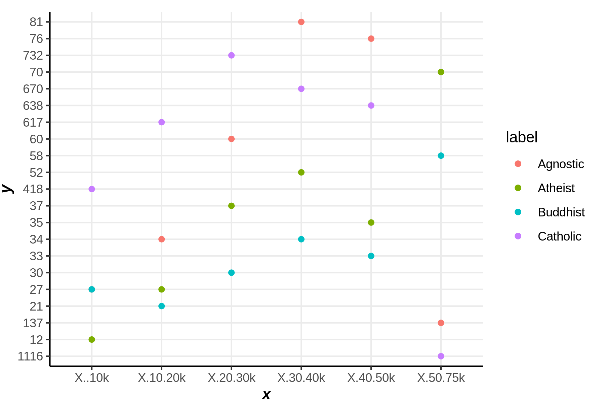
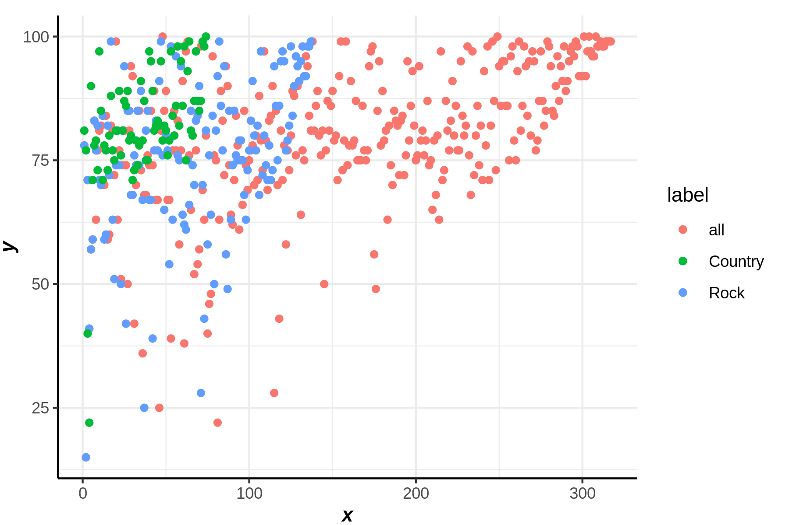
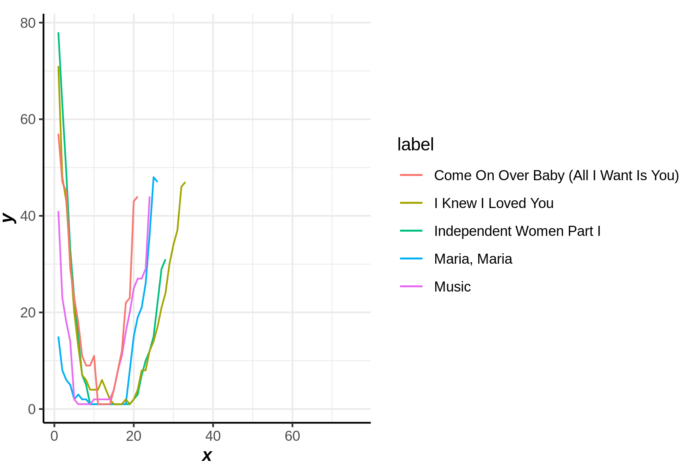
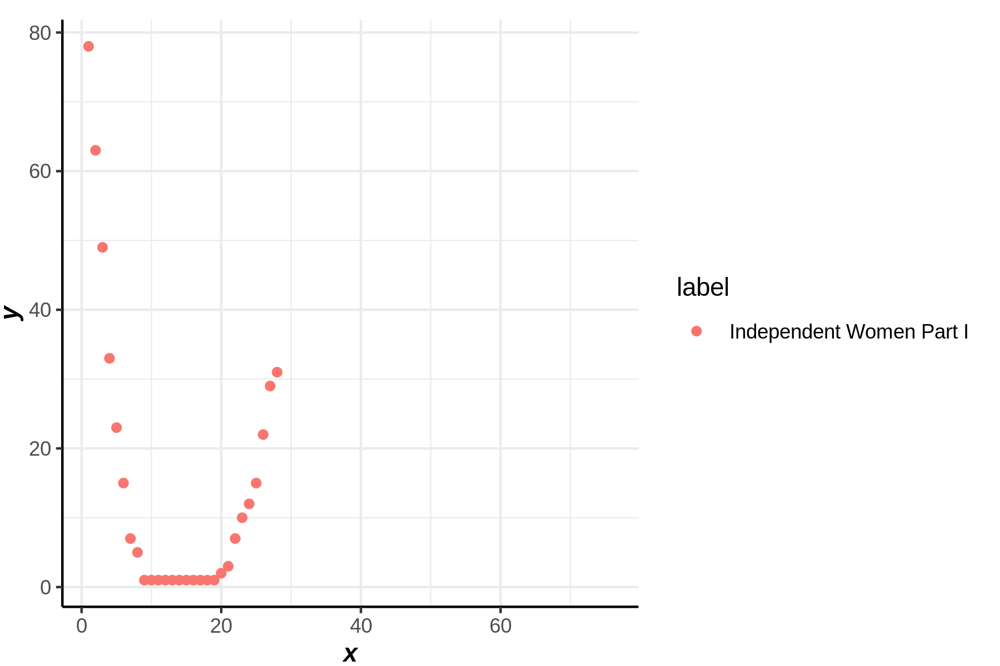

source('ggplot3.R')ERROR: Error in library(tidyverse): there is no package called ‘tidyverse’SEOYEON CHOI
August 25, 2023
데이터 출처 : https://github.com/nickhould/tidy-data-python
https://partrita.github.io/posts/tidy-data/
Loading required package: nlme
Attaching package: ‘nlme’
The following object is masked from ‘package:dplyr’:
collapse
This is mgcv 1.9-0. For overview type 'help("mgcv-package")'.
condition 부여 후 색 구분
condition 부여 후 절단
색 자동 지정은 label의 알파벳 순 혹은 그려진 순
| religion | X..10k | X.10.20k | X.20.30k | X.30.40k | X.40.50k | X.50.75k | |
|---|---|---|---|---|---|---|---|
| <chr> | <int> | <int> | <int> | <int> | <int> | <int> | |
| 1 | Agnostic | 27 | 34 | 60 | 81 | 76 | 137 |
| 2 | Atheist | 12 | 27 | 37 | 52 | 35 | 70 |
| 3 | Buddhist | 27 | 21 | 30 | 34 | 33 | 58 |
| 4 | Catholic | 418 | 617 | 732 | 670 | 638 | 1116 |
| 5 | Dont know/refused | 15 | 14 | 15 | 11 | 10 | 35 |
| 6 | Evangelical Prot | 575 | 869 | 1064 | 982 | 881 | 1486 |
ggplot() + point(colnames(pew)[2:7],t(pew[pew$religion=='Agnostic',])[2:7],label = 'Agnostic') +
point(colnames(pew)[2:7],t(pew[pew$religion=='Atheist',])[2:7],label = 'Atheist') +
point(colnames(pew)[2:7],t(pew[pew$religion=='Buddhist',])[2:7],label = 'Buddhist') +
point(colnames(pew)[2:7],t(pew[pew$religion=='Catholic',])[2:7],label = 'Catholic')
장르 별 1주차 빌보드 순위
ggplot() + point(billboard$x1st.week,label='all') + point(billboard[billboard$genre=='Rock',]$x1st.week,label='Rock') + point(billboard[billboard$genre=='Country',]$x1st.week,label='Country')
| year | artist.inverted | track | time | genre | date.entered | date.peaked | x1st.week | x2nd.week | x3rd.week | ⋯ | x67th.week | x68th.week | x69th.week | x70th.week | x71st.week | x72nd.week | x73rd.week | x74th.week | x75th.week | x76th.week | |
|---|---|---|---|---|---|---|---|---|---|---|---|---|---|---|---|---|---|---|---|---|---|
| <int> | <chr> | <chr> | <chr> | <chr> | <chr> | <chr> | <int> | <int> | <int> | ⋯ | <lgl> | <lgl> | <lgl> | <lgl> | <lgl> | <lgl> | <lgl> | <lgl> | <lgl> | <lgl> | |
| 1 | 2000 | Destiny's Child | Independent Women Part I | 3:38 | Rock | 2000-09-23 | 2000-11-18 | 78 | 63 | 49 | ⋯ | NA | NA | NA | NA | NA | NA | NA | NA | NA | NA |
| 2 | 2000 | Santana | Maria, Maria | 4:18 | Rock | 2000-02-12 | 2000-04-08 | 15 | 8 | 6 | ⋯ | NA | NA | NA | NA | NA | NA | NA | NA | NA | NA |
| 3 | 2000 | Savage Garden | I Knew I Loved You | 4:07 | Rock | 1999-10-23 | 2000-01-29 | 71 | 48 | 43 | ⋯ | NA | NA | NA | NA | NA | NA | NA | NA | NA | NA |
| 4 | 2000 | Madonna | Music | 3:45 | Rock | 2000-08-12 | 2000-09-16 | 41 | 23 | 18 | ⋯ | NA | NA | NA | NA | NA | NA | NA | NA | NA | NA |
| 5 | 2000 | Aguilera, Christina | Come On Over Baby (All I Want Is You) | 3:38 | Rock | 2000-08-05 | 2000-10-14 | 57 | 47 | 45 | ⋯ | NA | NA | NA | NA | NA | NA | NA | NA | NA | NA |
| 6 | 2000 | Janet | Doesn't Really Matter | 4:17 | Rock | 2000-06-17 | 2000-08-26 | 59 | 52 | 43 | ⋯ | NA | NA | NA | NA | NA | NA | NA | NA | NA | NA |
곡 별로 빌보드 차트에 얼마나 있었나 line
ggplot() + line(t(billboard[1,c(8:length(billboard))])[,1], label=billboard$track[1]) +
line(t(billboard[2,c(8:length(billboard))])[,1], label=billboard$track[2]) +
line(t(billboard[3,c(8:length(billboard))])[,1], label=billboard$track[3]) +
line(t(billboard[4,c(8:length(billboard))])[,1], label=billboard$track[4]) +
line(t(billboard[5,c(8:length(billboard))])[,1], label=billboard$track[5])Warning message:
“Removed 48 rows containing missing values (`geom_line()`).”
Warning message:
“Removed 50 rows containing missing values (`geom_line()`).”
Warning message:
“Removed 43 rows containing missing values (`geom_line()`).”
Warning message:
“Removed 52 rows containing missing values (`geom_line()`).”
Warning message:
“Removed 55 rows containing missing values (`geom_line()`).”
Warning message:
“Removed 48 rows containing missing values (`geom_point()`).”
WHO의 결핵환자 기록, m/f는 성별 슛저눈 나이대를 의미
| country | year | m014 | m1524 | m2534 | m3544 | m4554 | m5564 | m65 | mu | f014 | |
|---|---|---|---|---|---|---|---|---|---|---|---|
| <chr> | <int> | <int> | <int> | <int> | <int> | <int> | <int> | <int> | <lgl> | <int> | |
| 1 | AD | 2000 | 0 | 0 | 1 | 0 | 0 | 0 | 0 | NA | NA |
| 2 | AE | 2000 | 2 | 4 | 4 | 6 | 5 | 12 | 10 | NA | 3 |
| 3 | AF | 2000 | 52 | 228 | 183 | 149 | 129 | 94 | 80 | NA | 93 |
| 4 | AG | 2000 | 0 | 0 | 0 | 0 | 0 | 0 | 1 | NA | 1 |
| 5 | AL | 2000 | 2 | 19 | 21 | 14 | 24 | 19 | 16 | NA | 3 |
| 6 | AM | 2000 | 2 | 152 | 130 | 131 | 63 | 26 | 21 | NA | 1 |